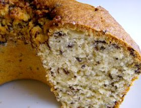

Bolo Formigueiro
Dona Genoveva

Ingredientes
- 5 colheres de sopa de margarina
- 2 copos tipo requeijão de açúcar
- 4 ovos
- 1 copo tipo requeijão de leite desnatado
- 2 copos tipo requeijão de farinha de trigo
- 100g chocolate granulado
- 100g coco ralado
- 1 colher de sopa de fermento
- Margarina para untar (assadeira)
- Farinha para enfarinhar (assadeira)
Modo de preparar
- Bata na batedeira as claras em neve
- Reserve
Bata a manteiga com açúcar e as gemas
- Junte o leite, trigo, coco ralado e o chocolate
- Acrescente as claras em neve e o fermento, mexa delicadamente
- Leve ao forno em assadeira untada e enfarinhada
- Asse em forno médio por aproximadamente 40 minutos ou até que doure